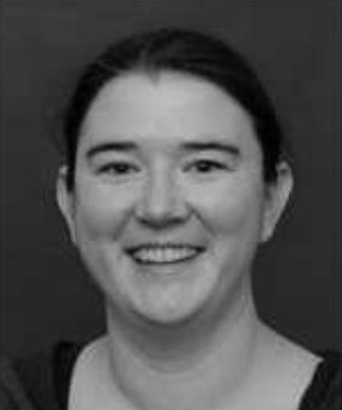

A/Prof. Tara Hamilton
by Tara Hamilton, 10 Jun 2019

Everything is connected: I started my professional life as a power engineer. Some twists and turns in my path led me to become interested in integrated circuit design (microelectronics/silicon chips) which in turn led me to becoming interested in medical devices and a job at Cochlear Ltd. At Cochlear, first working as a quality assurance engineer and then as an analogue integrated circuit design engineer, I discovered biology!
For an engineer who was used to structure and order, biology at first seems chaotic and random. My path took another turn and I ended up doing a PhD in neuromorphic engineering with the hope of both understanding better the circuits that underlie our nervous system as well as ways in which this may be applied to engineered technology. Being an engineer who studies neural systems is a continual learning process. Sometimes I don’t speak the same ‘language’ as my more biologically trained peers though we are sometimes talking about the same thing! And sometimes we disagree about mechanisms. But this is why neuromorphic engineering is an excellent field to work in: we bridge the gaps between a number of different disciplines and bring our knowledge of circuits and systems while learning about the mechanisms that allow our neural systems to perform complex tasks with little energy and a great deal of flexibility.
Today, I use the knowledge I have learned about neural systems to build more biologically compatible medical devices, better computational devices, and, yes, to make better power system networks! It seems that I never stopped being a power engineer after all and the principles I’ve learned through neuromorphic engineering can be applied beyond where anyone had imagined: everything is connected!
About me: Tara Julia Hamilton is an Associate Professor in the School of Engineering at Macquarie University. Tara received her BE (Electrical Engineering) Hon. I and BCOM (Economics and Marketing) from the University of Sydney in 2001, MSc (Biomedical Engineering) from UNSW in 2003, and PhD from the University of Sydney in 2009. She has held academic positions at the University of Sydney, the University of Queensland, University of New South Wales, and Western Sydney University. Tara has also worked extensively within industry having held full-time positions at Cochlear Ltd. (2000–2004) and G2 Microsystems (2007). Tara is the author of more than 100 research papers and three international patents. She currently holds an ARC Discovery Grant which explores auditory perception using neuromorphic systems and an ARC Linkage Grant which focuses on the development of novel music compositions using a deep-net partner. Tara works with leading health, defence, and technology companies and she is focused on developing innovative solutions to real-world problems. In her spare time Tara enjoys playing Lego with her twin boys (3.5 years old), growing vegies and orchids in her all-too-often neglected garden, and swimming.